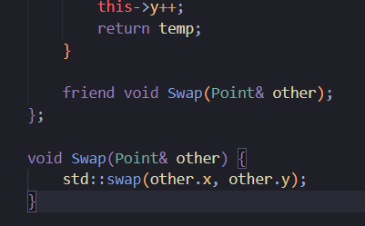
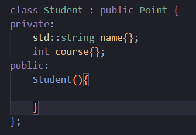
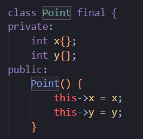
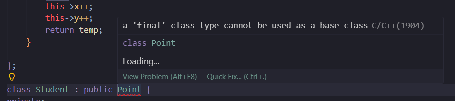
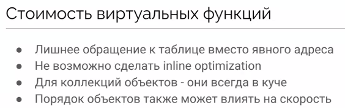

Наследование и полиморфизм
Виртуальные методы, интерфейсы и безопасное удаление объектов.
ООП: Наследование
friend function
Позволяет описать новый класс на основе уже существующих
Обеспечивает повторное использование кода
class CStudent : public CPerson Дочерний Базовый

friend class
Позволяет описать новый класс на основе уже существующих
Обеспечивает повторное использование кода
class CStudent : public CPerson Дочерний Базовый

Наследник: Объект производного класса содержит подобъект базового класса. Сохраняйт методы родителя* Модификаторы доступа
Сначала вызывается конструктор от базовых к дочерним Деструктор от дочерних к базовым (в обратном порядке)
protected - можно использовать поля в дочерних, но нельзя, как в public использовать в main
Конструктор Базового класса будет вызываться каждый раз, когда будет вызываться дочерний
Final
Спецификатор final запрещает наследоваться от помеченного класса или переопределять помеченный виртуальный метод.
class MyClass final


Посмотри как задавать конструктор и деструктор
Ромбовидное наследование - Почитай
Полиморфизм virtual override
Полиморфизм — это возможность использовать классы – потомки в контексте, который был предназначен для класса – предка.
Интерфейс - совокупность методов класса
Статическая память - известна на этапе компиляции
override - переопределить Virtual - какой-то метод является виртуальной и его можно будет переопределить в классе наследнике
#include <iostream>
class Gun {
public:
virtual void Shot(){
std::cout << "boom\n";
}
};
class SubGun : public Gun {
public:
void Shot() override {
std::cout << "Bang\n";
}
};
int main() {
Gun gun;
SubGun mash;
Gun *weapon = &mash;
weapon->Shot();
}Ключевое слово virtual помогает переопределить метод исходного класса и использовать его с другими данными
#include <iostream>
class Bazooka {
public:
virtual void Shot(){
std::cout << "boom\n";
}
};
class SubGun : public Bazooka {
public:
void Shot() override {
std::cout << "Bang\n";
}
};
class Player {
public:
void Shot(Bazooka*gun) {
gun->Shot();
}
};
int main() {
Bazooka gun;
SubGun gun1;
Player p;
p.Shot(&gun1);
}Строится таблица виртуальной функции, где находится все виртуальные методы. С помощью этой таблицы можно искать ячейки в памяти и использовать их из дочернего класса
override - метод будет работать с виртуальными методами
Если метод final то override запрещён
Виртуальный деструктор позволяет корректно уничтожать производный объект через указатель на базовый класс.
При вызове виртуального метода через указатель или ссылку базового типа выбирается реализация, соответствующая фактическому типу объекта.
Таблица хранится в коде в которой хранятся реальный мапинг...
Полиморфизм - позволяет работать с разными типами данных
